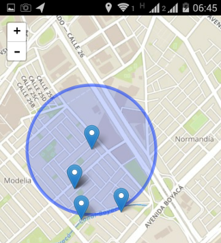
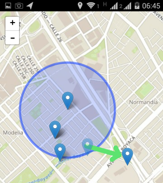

MapToDo
Aplicación para almacenar tareas por hacer en los mapas
Cargando información .....
Información general
Esta aplicación permite hacer un seguimiento de sitios a visitar, e ir descartando los sitios visitados
Muestra el punto en donde me encuento y los puntos anteriormente cargados, también muestra un radio de 500 metros para ver cuales son los puntos cercanos

Agregar un punto
Para agregar un punto de click en el mapa, coloque un titulo y una descripción
Marcar como hecho un punto
Para marcar un punto como hecho simplemente de click sostenido y arrastrelo hacia cualquier dirección, con esto el punto sera quitado de la lista de tareas a realizar
